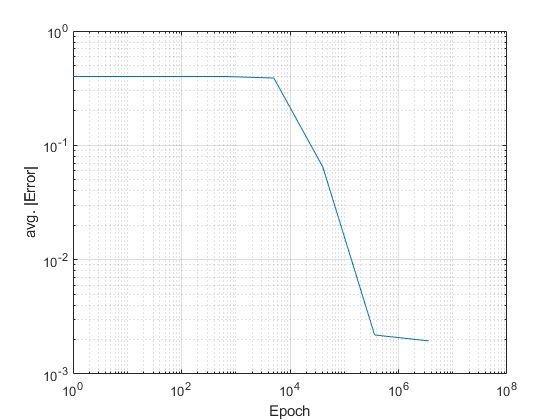
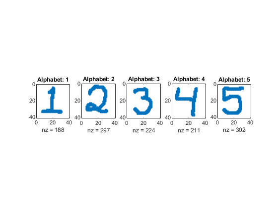
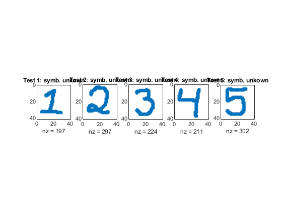
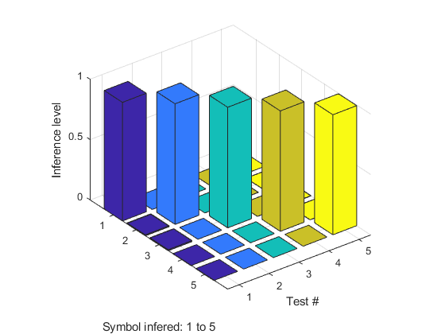

clear;
close all;
clc;
numrow = 40;
numcol = 40;
X = zeros(numrow, numcol, 5);
cd Treinamento
imagefiles = dir('*.jpg');
nfiles = length(imagefiles);
for ii=1:nfiles
currentfilename = imagefiles(ii).name;
X(:,:,ii) = funcao_ler_imagem(currentfilename, numrow, numcol);
end
cd ..
D = [ 1 0 0 0 0;
0 1 0 0 0;
0 0 1 0 0;
0 0 0 1 0;
0 0 0 0 1];
M = 1:10; rng(3);
W1 = 2*rand(50, numrow*numcol) - 1;
W2 = 2*rand(5, 50) - 1;
for i=1:length(M)
epoch(i) = factorial(M(i));
for j=1:epoch
[W1, W2, Er] = MultiClass(W1, W2, X, D);
end
avgEr(i) = mean(abs(Er),1);
end
MM = factorial(M);
figure(1)
loglog(MM, avgEr)
xlabel("Epoch")
ylabel("avg. |Error|")
grid on
figure(2)
width=5;
subplot(1,5,1)
spy(X(:, :, 1))
title("Alphabet: 1")
subplot(1,5,2)
spy(X(:, :, 2))
title("Alphabet: 2")
subplot(1,5,3)
spy(X(:, :, 3))
title("Alphabet: 3")
subplot(1,5,4)
spy(X(:, :, 4))
title("Alphabet: 4")
subplot(1,5,5)
spy(X(:, :, 5))
title("Alphabet: 5")
N = 5;
cd Validacao
imagefiles = dir('*.jpg');
nfiles = length(imagefiles);
for ii=1:nfiles
currentfilename = imagefiles(ii).name;
Xop(:,:,ii) = funcao_ler_imagem(currentfilename, numrow, numcol);
end
cd ..
figure(3)
subplot(1,5,1)
spy(Xop(:, :, 1))
title("Test 1: symb. unkown")
subplot(1,5,2)
spy(Xop(:, :, 2))
title("Test 2: symb. unkown")
subplot(1,5,3)
spy(Xop(:, :, 3))
title("Test 3: symb. unkown")
subplot(1,5,4)
spy(Xop(:, :, 4))
title("Test 4: symb. unkown")
subplot(1,5,5)
spy(Xop(:, :, 5))
title("Test 5: symb. unkown")
for k = 1:N
x = reshape(Xop(:, :, k), 40*40, 1);
v1 = W1*x;
v1 = dlarray(v1);
y1 = sigmoid(v1);
v = W2*y1;
v = extractdata(v);
y(:,k) = softmax(v);
end
figure(4)
bar3(y)
xlabel("Test #")
ylabel("Symbol infered: 1 to 5")
zlabel("Inference level")
function [W1, W2, e] = MultiClass(W1, W2, X, D)
alpha = 0.9;
N = 5;
for k = 1:N
x = reshape(X(:, :, k), 40*40, 1);
d = D(k, :)';
v1 = W1*x;
v1 = dlarray(v1);
y1 = sigmoid(v1);
v = W2*y1;
v = extractdata(v);
y = softmax(v);
e = d - y;
delta = e;
e1 = W2'*delta;
delta1 = y1.*(1-y1).*e1;
dW1 = alpha*delta1*x';
W1 = W1 + dW1;
dW2 = alpha*delta*y1';
W2 = W2 + dW2;
end
end
function imagem = funcao_ler_imagem(name, numrow, numcol)
img = imread(name);
img =255-img;
img = im2double(img);
J = imresize(img, [numrow, numcol]);
J = rgb2gray(J);
J = imbinarize(J);
imagem = J;
end
   